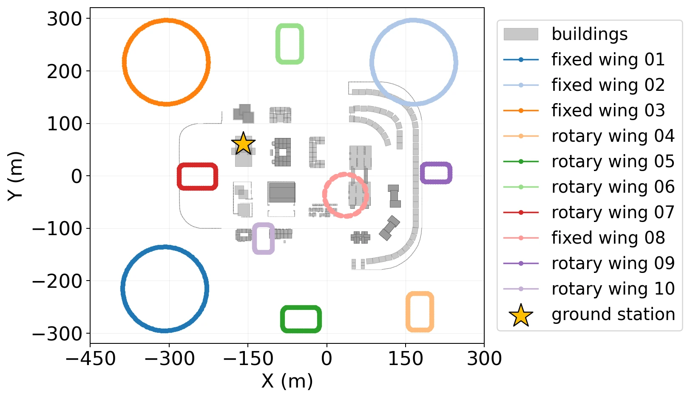
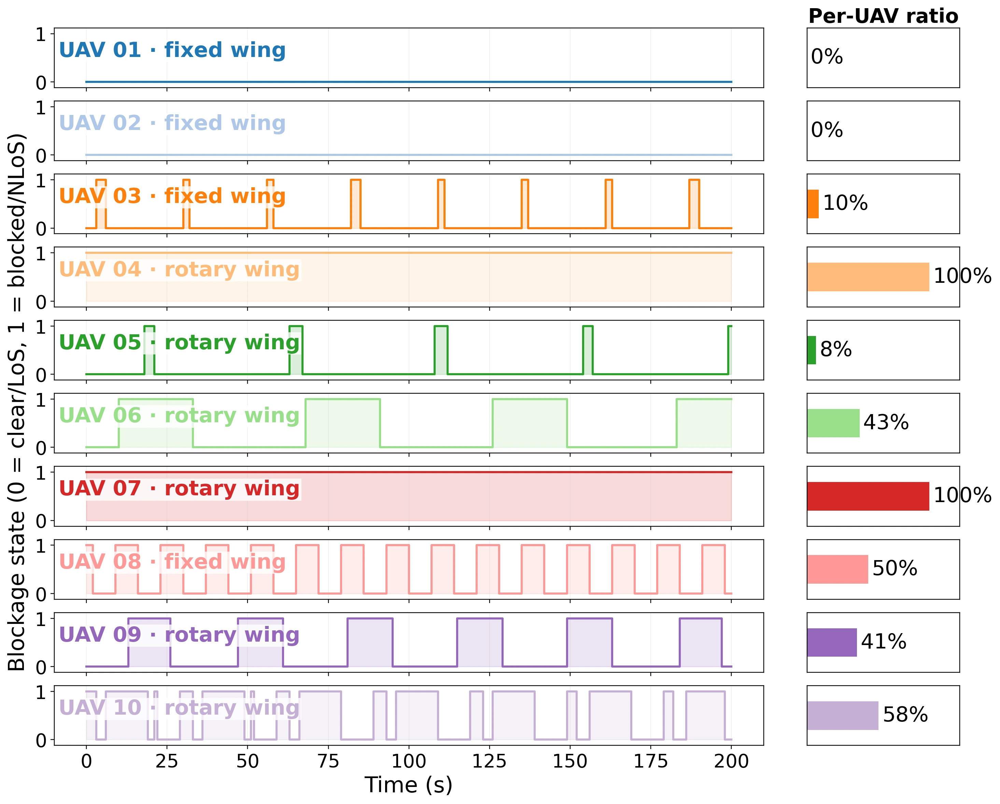

OpenMAMS: Open-Sourced Multi-Agent Memory System
Memory in the Sky: Low-Altitude Question Answering with Multi-Agent Memory Aggregation
1The University of Hong Kong · 2Southern University of Science and Technology
3Shenzhen Institutes of Advanced Technology, Chinese Academy of Sciences
4University of Macau · 5Istanbul Medipol University
OpenMAMS aggregates distributed UAV memories for long-horizon question answering. Our memory-centric framework measures what each candidate memory adds, then jointly selects UAVs and allocates transmit power under communication constraints.
Overview
OpenMAMS is the multi-agent memory system and benchmarking platform developed for low-altitude question answering (LAQA). It connects aerial observations with a ground memory server so that users can ask about objects, locations, and events observed over time.
The platform described in the paper supports:
- Multi-agent data collection: images, timestamps, 6D poses, and LiDAR point clouds in CARLA.
- Memory construction and retrieval: VLM captioning, text embeddings, and a vector database for spatiotemporal queries.
- Memory quality evaluation: a generative adversarial exam (GAE) measures the knowledge gap between candidate observations and the current memory.
- Memory-centric resource allocation: MemCen jointly selects UAV memories and allocates transmit power, with penalty successive optimization (PSO) and learning to memorize (L2M) solvers.
Architecture
Selected observations are captioned and stored with their timestamps and poses. The resulting global memory supports retrieval-augmented question answering.
How does GAE evaluate a candidate memory?
GAE generates questions grounded in candidate observations and tests whether the current global memory can answer them. Unanswered questions reveal missing knowledge and quantify the value of acquiring that candidate memory. MemCen combines this task utility with payload sizes, channel conditions, interference, and power constraints.
CARLA Simulation
Town04: multi-UAV inspection
Ten UAVs inspect different regions of Town04 and collect complementary observations for memory construction. The demo shows their locations, sample image frames, and associated captions. Questions ask whether an object is present, where it is located, and which UAV observed it.
Town05: dynamic and heterogeneous UAVs
 |
 |
| UAV trajectories and ground station | Time-varying link blockage |
Four fixed-wing and six multirotor UAVs conduct a 200-second search-and-rescue mission in Town05. Their trajectories, image workloads, and building blockage create varying communication conditions. MemCen selects complementary memories and adapts transmit power to support downstream question answering.
Real-World Experiments
Panoramic multi-agent system (PMAS)
Three panoramic UAVs collect complementary observations along distinct routes. Their observations are registered in a shared 3D coordinate frame for object-presence and spatial-grounding questions. The aerial data are collected in the field, while communication is evaluated through offline channel replay.
UAV-to-ground-robot memory reuse
A robot dog reuses aerial memory to answer environmental questions and navigate to a queried location.
Memory-Native Non-Terrestrial Networks
MemNTN extends memory-based remote question answering to satellite networks through memory management, fusion, and valuation.
The LEOPath and CARLA evaluation compares remote question-answering accuracy and end-to-end throughput across satellite constellation sizes. MemNTN achieves 97.8% QA accuracy in the 400-satellite case, outperforming the compared baselines.
Results
| Evaluation | Setting | MemCen QA accuracy |
|---|---|---|
| CARLA Town04 | Static communication conditions | 92.4% |
| CARLA Town05 | Dynamic channels, heterogeneous UAVs, and building blockage | 84.0% |
| Real PMAS | Real aerial observations with offline channel replay | 88.5% |
Demos
Town04 · Four-UAV captioned views
The Town04 demo shows four virtual UAV camera views in a 2 × 2 layout, with captions describing each UAV's observations. See the asset descriptions for recording details.
Town05 · Ten-UAV captioned views
The Town05 demo shows ten virtual UAV cameras following a closed road route in a 5 × 2 layout. Captions update every three seconds. See the asset descriptions for recording details.
Robot Dog · UAV-to-ground memory reuse
A robot dog reuses aerial memory to answer environmental questions and navigate to a queried location. The video shows the robot navigating to a basketball court, alongside first-person, third-person, and point-cloud views.
Citation
If you find this work useful, please cite:
Journal version
@misc{li2026memoryinthesky,
title = {Memory in the Sky: Low-Altitude Question Answering with Multi-Agent Memory Aggregation},
author = {Li, Chengyang and Wan, Yujie and Wang, Shuai and Ye, Kejiang and Yuan, Weijie and Zhou, Boyu and Wu, Yik-Chung and Xu, Chengzhong and Arslan, Huseyin},
year = {2026},
eprint = {2609.35431},
archivePrefix = {arXiv},
primaryClass = {cs.RO},
url = {https://arxiv.org/abs/2609.35431}
}
Conference version
@inproceedings{li2026memory,
title={Memory centric power allocation for multi-agent embodied question answering},
author={C. Li and S. Wang and K. Ye and W. Yuan and B. Zhou and Y.-C. Wu and C. Xu and H. Arslan},
booktitle={Proc. GLOBECOM},
year={2026}
}
Magazine version
@article{li2026memntn,
title={Memory-Native Non-Terrestrial Networks for Embodied Intelligence},
author={Li, Chengyang and Wang, Yikun and He, Jiahui and Wan, Yujie and Wang, Shuai and Wu, Yuan and Wu, Yik-Chung and Xu, Chengzhong and Arslan, Huseyin},
journal={IEEE Communications Standards Magazine},
year={2026}
}
Contact
- Chengyang Li: KevinLADLee
- Shuai Wang: bearswang